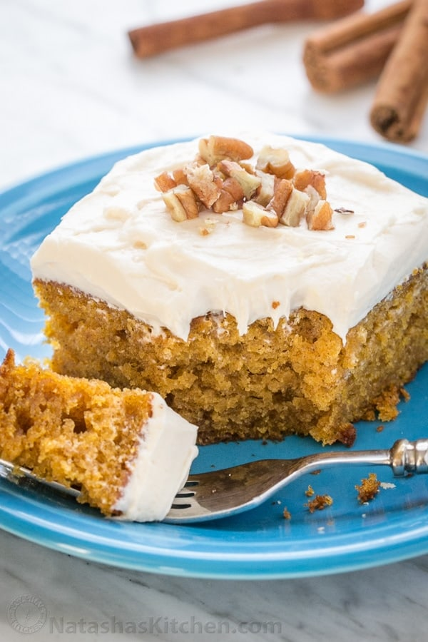

Pumpkin cake

Description
This Easy Pumpkin Cake is our favorite, fluffy, moist and absolutely delicious pumpkin cake.
It has a tender, moist and delicate crumb.
The marshmallow-like whipped cream cheese frosting takes it over the top.
Ingredients
- 2 cups all-purpose flour
- 1 1/2 cups granulated sugar
- 1 tsp baking soda (sifted to get rid of lumps)
- 2 tsp baking powder
- 2 tsp cinnamon
- 3 large eggs, room temp
- 1 cup oil (extra light olive oil, vegetable or corn oil will work)
- 1 can (15 oz) pumpkin puree
Steps
- In a large bowl, whisk together the dry ingredients: 2 cups flour, 1 1/2 cups sugar, 1 tsp baking soda, 2 tsp baking powder, 2 tsp cinnamon.
- In a second medium bowl, whisk together wet ingredients: 3 large eggs, 1 cup oil and 1 can pumpkin, until well combined.
- Add wet ingredients to dry ingredients and whisk until smooth. Transfer to prepared baking dish and bake at 350˚F for 35-40 min (my oven took 35 mins), or until a toothpick poked in the center comes out clean. Let cake cool completely in pan then spread the top with frosting (see below) and decorate with pecans or sprinkles.